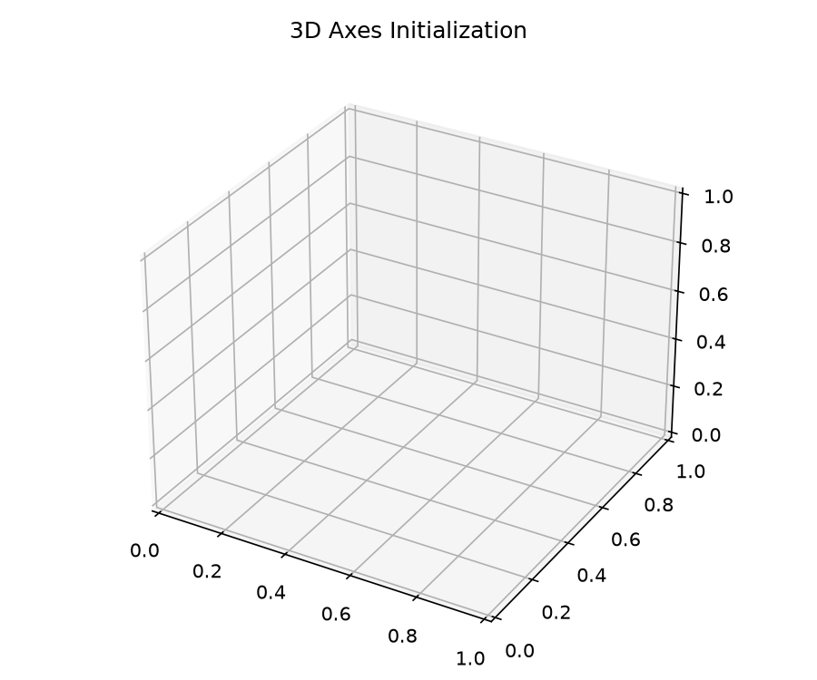
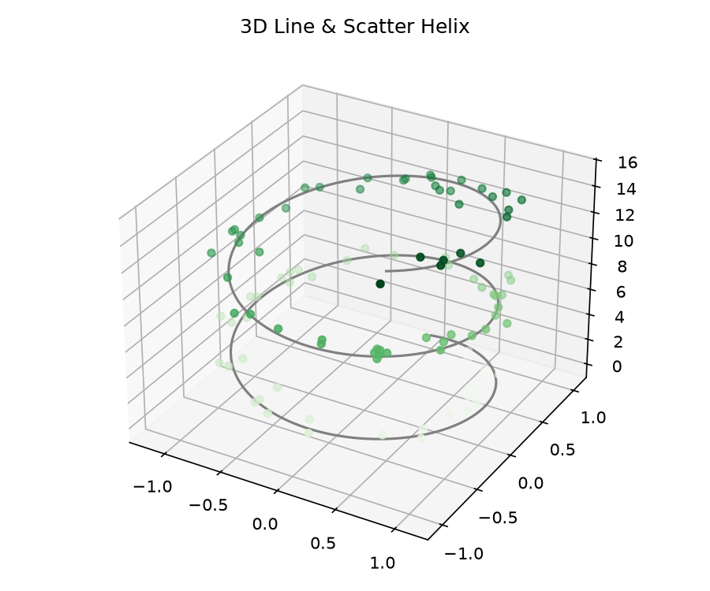
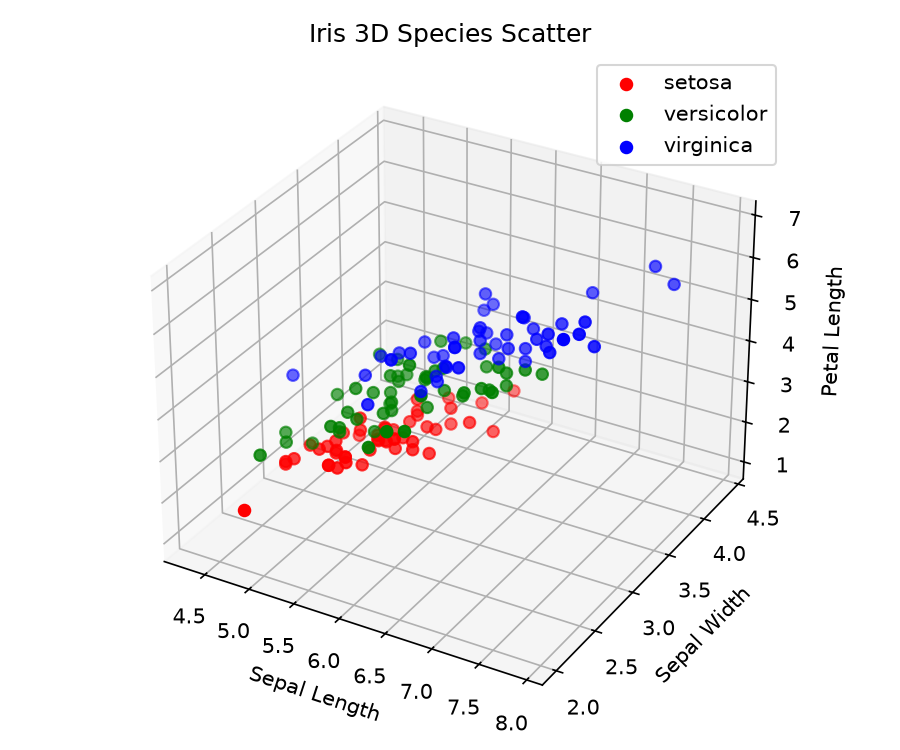
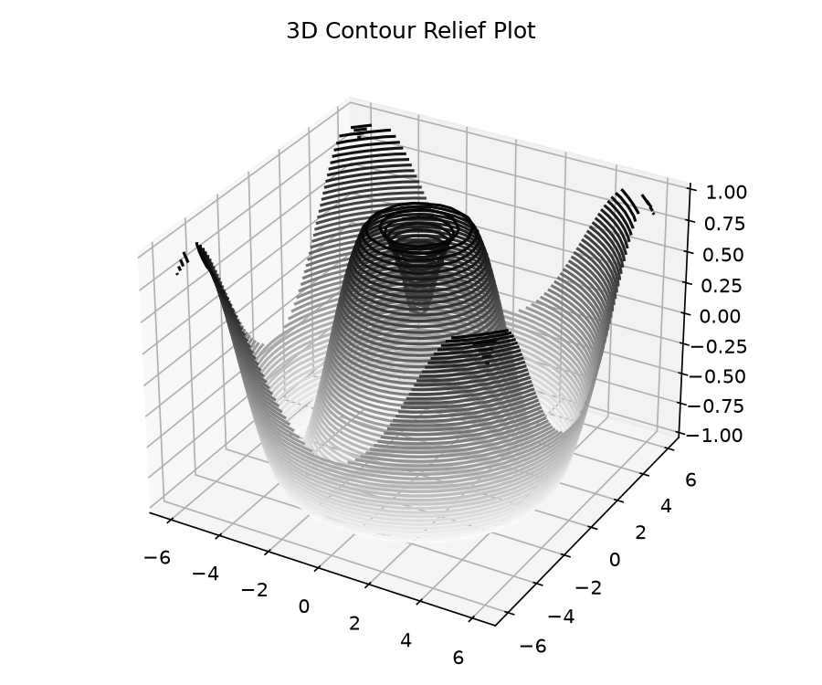
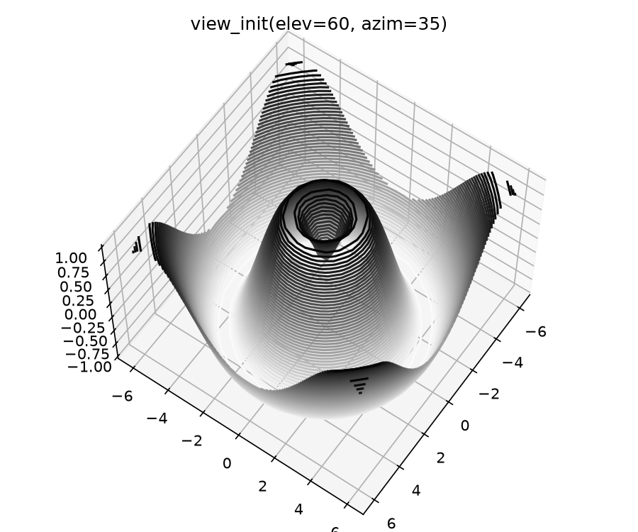
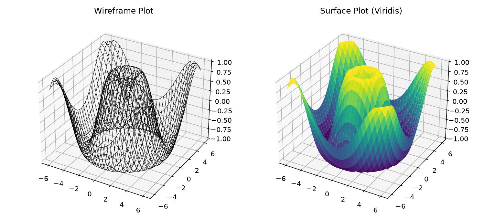
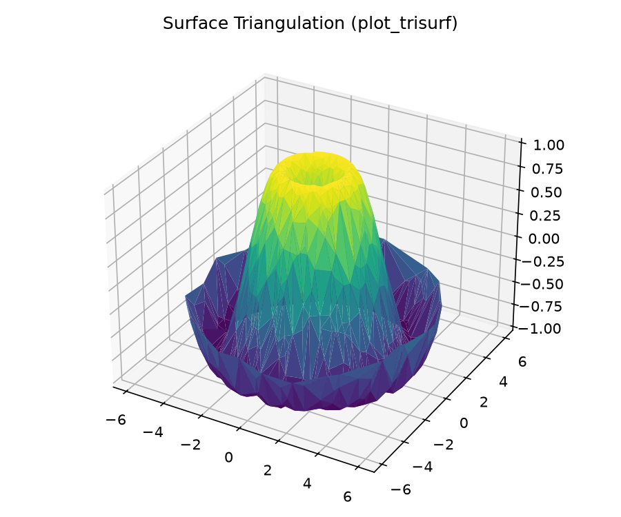

Three-Dimensional Plotting in Matplotlib
We enable three-dimensional plots by importing the mplot3d toolkit, included with the main Matplotlib installation. With this 3D axes enabled, we can now plot a variety of three-dimensional plot types.
📖 Core Concepts & Definitions
- mplot3d Toolkit: Extension included in standard Matplotlib that registers 3D projection axes.
- Axis Registration:
ax = plt.axes(projection='3d')orfig.add_subplot(projection='3d'). - Elevation (elev): Pitch angle above the XY plane in degrees (default 30°).
- Azimuth (azim): Yaw angle rotation around the Z axis in degrees (default -60°).
import numpy as np
import matplotlib.pyplot as plt
from mpl_toolkits import mplot3d
fig = plt.figure()
ax = plt.axes(projection='3d')
Three-Dimensional Points and Lines
The most basic three-dimensional plot is a line or scatter plot created from sets of (x, y, z) triples. In analogy with the more common two-dimensional plots, we can create these using the ax.plot3D and ax.scatter3D functions.
🖱️ Live Rotatable 3D Helix
Interactive Plotly — Drag to rotate💡 Notice that by default, the scatter points have their transparency adjusted to give a sense of depth on the page.
ax = plt.axes(projection='3d')
# Data for a three-dimensional line
zline = np.linspace(0, 15, 1000)
xline = np.sin(zline)
yline = np.cos(zline)
ax.plot3D(xline, yline, zline, 'gray')
# Data for three-dimensional scattered points
zdata = 15 * np.random.random(100)
xdata = np.sin(zdata) + 0.1 * np.random.randn(100)
ydata = np.cos(zdata) + 0.1 * np.random.randn(100)
ax.scatter3D(xdata, ydata, zdata,
c=zdata, cmap='Greens')
plt.show()
3D Scatter Plot — Iris Dataset
Using ax.scatter3D() to visualize the Iris dataset (150 samples × 4 features) in 3D space, coloring by species to reveal class separation in petal and sepal dimensions.
import seaborn as sns
iris = sns.load_dataset("iris")
fig = plt.figure(figsize=(8, 6))
ax = plt.axes(projection='3d')
for species, group in iris.groupby('species'):
ax.scatter3D(group['sepal_length'],
group['sepal_width'],
group['petal_length'],
label=species)
ax.set_xlabel("Sepal Length")
ax.set_ylabel("Sepal Width")
ax.set_zlabel("Petal Length")
ax.legend()
plt.show()
📖 3D Scatter — Key Points
- ax.scatter3D(): Plots discrete 3D data points with customizable color, size, and markers.
- Iris Dataset: 150 samples × 4 numeric features + 1 species label (Fisher, 1936).
- Grouping:
groupby('species')iterates over each class for color-coded scatter. - Key Finding: Setosa is linearly separable; Versicolor and Virginica overlap in some dimensions.
- Depth Cue: Points further from the camera have lower opacity automatically.
Three-Dimensional Contour Plots
mplot3d contains tools to create three-dimensional relief plots. Like two-dimensional ax.contour plots, ax.contour3D requires all the input data to be in the form of two-dimensional regular grids, with the Z data evaluated at each point.
🖱️ Interactive 3D Contour Surface
Drag to rotatedef f(x, y):
return np.sin(np.sqrt(x ** 2 + y ** 2))
x = np.linspace(-6, 6, 30)
y = np.linspace(-6, 6, 30)
X, Y = np.meshgrid(x, y)
Z = f(X, Y)
fig = plt.figure()
ax = plt.axes(projection='3d')
ax.contour3D(X, Y, Z, 50, cmap='binary')
ax.set_xlabel('x')
ax.set_ylabel('y')
ax.set_zlabel('z')
plt.show()
Viewing Angles — ax.view_init()
Sometimes the default viewing angle is not optimal, in which case we can use the view_init method to set the elevation and azimuthal angles. Use the sliders below to explore how camera angles change the 3D view.
🖱️ Camera Angle Explorer
Adjust sliders to change view
ax.view_init(elev=60, azim=35)
ax.view_init(60, 35)
fig
📖 view_init Parameters
- elev: Elevation in degrees — rotates the camera up/down (0° = side view, 90° = top-down).
- azim: Azimuthal angle — rotates the camera around the Z axis.
Wireframes and Surface Plots
Two other types of three-dimensional plots that work on gridded data are wireframes and surface plots. These take a grid of values and project it onto the specified three-dimensional surface, and can make the resulting three-dimensional forms quite easy to visualize. A surface plot is like a wireframe plot, but each face of the wireframe is a filled polygon.
🖱️ Interactive Wireframe vs Surface
Change render mode & colormapfig = plt.figure()
ax = plt.axes(projection='3d')
ax.plot_wireframe(X, Y, Z, color='black')
ax.set_title('wireframe')
plt.show()ax = plt.axes(projection='3d')
ax.plot_surface(X, Y, Z, rstride=1, cstride=1,
cmap='viridis', edgecolor='none')
ax.set_title('surface')
plt.show()
Surface Triangulations
For some applications, the evenly sampled grids required by the preceding routines are overly restrictive and inconvenient. In these situations, the triangulation-based plots can be very useful. ax.plot_trisurf() builds a surface from irregular (non-gridded) point clouds using Delaunay triangulation.
🖱️ Live 3D Surface Triangulation
Plotly Mesh3D Delaunay • Drag to rotatetheta = 2 * np.pi * np.random.random(1000)
r = 6 * np.random.random(1000)
x = np.ravel(r * np.sin(theta))
y = np.ravel(r * np.cos(theta))
z = f(x, y)
ax = plt.axes(projection='3d')
ax.scatter(x, y, z, c=z, cmap='viridis',
linewidth=0.5)
📖 Triangulation — Key Concepts
- Problem: Regular grids (
meshgrid) can't represent all surfaces — irregular point clouds need a different approach. - Delaunay Triangulation: Algorithm that connects irregular points into non-overlapping triangles, maximizing the minimum angle.
- ax.plot_trisurf(): Takes raw (x, y, z) arrays and auto-triangulates them into a surface mesh.
- Random Sampling: In this example, 1000 random polar-coordinate points are scattered across the sinusoidal function
f(x,y) = sin(√(x²+y²)).